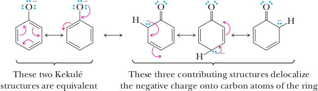
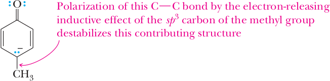
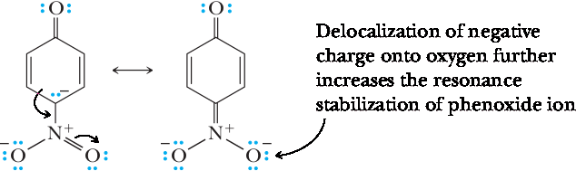

Phenols
The functional group of a phenol is a hydroxyl group bonded directly to a benzene ring. Substituted phenols are named either as derivatives of phenol, as benzenols, or by common names.
(m-Cresol)
(Catechol)
(Resorcinol)

(Hydroquinone)
Phenols are widely distributed in nature. Phenol itself and the isomeric cresols (o-, m-, and p-cresol) are found in coal tar and petroleum. Thymol and vanillin are important constituents of thyme and vanilla beans.
(Thymol)
(Vanillin)
Phenol, or carbolic acid as it was once called, is a low-melting solid that is soluble in water. In suffi ciently high concentrations, it is harmful to all kinds of cells. In dilute solutions, it has some antiseptic properties and was introduced into the practice of surgery by Joseph Lister who demonstrated his technique of aseptic surgery in the surgical theater of the University of Glasgow School of Medicine in 1865. Phenol’s medical use is now limited. It has been replaced by antiseptics that are both more powerful and have fewer undesirable side effects. Among these is hexyl-resorcinol, which is widely used in nonprescription preparations as a mild antiseptic and disinfectant. Eugenol, which can be isolated from the flower buds (cloves) of Eugenia aromatica, is used as a dental antiseptic and analgesic. Urushiol is the main component of the irritating oil of poison ivy.

Acidity of Phenols
Phenols and alcohols both contain a hydroxyl group. Phenols, however, are grouped as a separate class of compounds because their chemical properties are quite different from those of alcohols. One of the most important of these differences is that phenols are significantly more acidic than alcohols. The acid ionization constant of phenol is 106 times larger than that of ethanol.
| Ph−OH | + H2O | ⇌ | Ph−O− | + H3O+ | Ka = 1.1 x 10−10 | pKa = 9.95 |
| CH3CH2CH2−OH | + H2O | ⇌ | CH3CH2−O− | +H3O+ | Ka = 1.3 x 10−16 | pKa = 15.9 |
Another way to compare the relative acid strengths of ethanol and phenol is to look at the hydrogen ion concentration and pH of a 0.1 M aqueous solution of each (Table 1). For comparison, the hydrogen ion concentration and pH of 0.1 M HCl are also included.
In aqueous solution, alcohols are neutral substances, and the hydrogen ion concentration of 0.1 M ethanol is the same as that of pure water. A 0.1 M solution of phenol is slightly acidic and has a pH of 5.4. By contrast, 0.1 M HCl, a strong acid (completely ionized in aqueous solution), has a pH of 1.0.
| Acid Ionization Equation | [H+] | pH | ||||
|---|---|---|---|---|---|---|
| CH3CH2OH | + H2O | ⇌ | CH3CH2O− | H3O+ | 1 x 107 | 7.0 |
| C6H5OH | + H2O | ⇌ | C6H6O− | H3O+ | 3.3 x 10−6 | 5.4 |
| HCl | + H2O | ⇌ | Cl− | H3O+ | 0.1 | 1.0 |
The greater acidity of phenol is a result of the greater stability of the phenoxide ion compared with an alkoxide ion. The negative charge on the phenoxide ion is delocalized by resonance. The two contributing structures on the left place the negative charge on oxygen. The three contributing structures on the right place it on the ortho and para positions of the ring. Taken together, these contributing structures delocalize the negative charge of the phenoxide ion over four atoms. There is no possibility for delocalization of charge in an alkoxide ion
Note that although the charge-delocalization resonance model gives us a way of understanding why phenol is a stronger acid than ethanol, it does not provide us with any quantitative means of predicting just how much stronger an acid it might be. To find out how much stronger one acid is compared with another, we must determine their pK a values experimentally and compare them.
Ring substituents, particularly halogens and nitro groups, have marked effects on the acidities of phenols by a combination of inductive and resonance effects. Both m-cresol and p-cresol are weaker acids than phenol itself; m-chlorophenol and p-chlorophenol are stronger acids than phenol.
pKa 9.95
pKa 10.01

pKa 10.17
pKa 10.17
(Hydroquinone)
The acid-weakening effect of alkyl-substituted phenols can be understood in the following way. The sp2-hybridized carbon of an aromatic ring is more electronegative than the sp3-hybridized atom of an alkyl substituent. Alkyl substituents are electron releasing toward the aromatic ring. Because they are electron releasing, they destabilize phenoxide ion-contributing structures and in effect reduce the acidity of substituted phenols.
The inductive effect of the halogens is opposite to that of alkyl substituents. Because the halogens are more electronegative than carbon, they withdraw electron density from the aromatic ring and stabilize the halophenoxide ion compared to phenoxide ion itself. Fluorine, the most electronegative halogen, has the greatest acid-strengthening effect in halophenols; the effect is less for chlorophenols
and still less for bromophenols.
We find the operation of both the inductive and resonance effects in the nitrophenols.
pKa 9.95
pKa 8.28
pKa 7.15
Both m-nitrophenol and p-nitrophenol are stronger acids than phenol. The acid-strengthening effect of the nitro group is greater in the para position, even though it is farther away from the −OH group. Part of the acid-strengthening property of the nitro group is the result of its electron-withdrawing inductive effect. In addition, nitro substitution in the ortho or para positions increases acidity because the negative charge of the phenoxide ion is delocalized onto an oxygen of the nitro group as shown in the contributing structure on the right.
The combined inductive and resonance acid-strengthening effects of the nitro group are such that 2,4,6-trinitrophenol (picric acid) is a stronger acid than phosphoric acid or the hydrogen sulfate ion.
|
(Picric acid) pKa 0.38 |
H3PO4 Phosphoric acid pKa 2.1 |
HSO4− Hydrogen sulfate ion pKa 1.92 |
Acid-Base Reactions of Phenols
Phenols are weak acids and react with strong bases, such as NaOH, to form watersoluble salts.
| Ph−OH Phenol pKa (stronger acid) | + NaOH Sodium Hydroxide | ⇌ | Ph−O−Na+ (Sodium phenoxide) | + H2O Water pKa 15.7 (weaker acid) |
Most phenols do not react with weaker bases such as sodium bicarbonate; they do not dissolve in aqueous sodium bicarbonate. Here you would do well to review Section 4.4.
Carbonic acid is a stronger acid than phenol, and consequently the equilibrium for the reaction of phenol and bicarbonate ion lies far to the left.
| Ph−OH Phenol pKa (weaker acid) | + NaHCO3 Sodium bicarbonate | ⇌ | Ph−O−Na+ (Sodium phenoxide) | + H2CO3 Carbonic Acids pKa 15.7 (stronger acid) |
Phenols do, however, form water-soluble salts with sodium carbonate, a stronger base than sodium bicarbonate.
The fact that phenols are weakly acidic whereas alcohols are neutral provides
a very convenient way to separate water-insoluble phenols from water-insoluble alcohols. Suppose that we want to separate 4-methylphenol (p-cresol) from cyclohexanol. Each is only slightly soluble in water; therefore, they cannot be separated on the basis of their water solubility. They can be separated, however, on the basis of their differences in acidity. First, the mixture of the two is dissolved in diethyl ether or some other water-immiscible solvent. Next, the ether solution is placed in a separatory funnel and shaken with dilute aqueous NaOH. Under these conditions, 4-methylphenol reacts with NaOH and is converted to a water-soluble phenoxide salt. The upper layer in the separatory funnel is now diethyl ether (density 0.74 g/cm3) containing only dissolved cyclohexanol. The lower aqueous layer contains the dissolved phenoxide salt. The layers are separated, and removal of the ether (bp 35°C) by distillation leaves pure cyclohexanol (bp 161°C). Acidification of the aqueous phase with 0.1 M HCl or other strong acid converts the phenoxide salt to 4-methylphenol, which is more soluble in ether than in water and can be extracted with ether and recovered in pure form. These experimental steps are summarized in Figure 21.14.
Capsaicin
Capsaicin, the pungent principle from the fruit of various species of peppers (from the genus Capsicum and the family Solanaceae), was isolated in 1876, and its structure was determined in 1919.
(from various types of peppers)
Capsaicin activates an ion-channel protein that modulates the transport of cations across cell membranes in response to heat or abrasion. Hence, the spiciness of Capsaicin is akin to a burning sensation, although there is no direct tissue damage. If the amide is hydrolized, the individual components of Capsaicin no longer elicit the burning sensation.
Example. Arrange these compounds in order of increasing acidity: 2,4-dinitrophenol, phenol, and benzyl alcohol.
Solution. Benzyl alcohol, a primary alcohol, has a pKa of approximately 16–18 (Section 10.3). The pKa of phenol is 9.95. Nitro groups are electron withdrawing and increase the acidity of the phenolic −OH group. In order of increasing acidity, they are
pKa 16-18
pKa 9.95
pKa 3.96
2,4-Dinitrophenol
Dinitrophenol (DNP) is an uncoupler of oxidative phosphorylation. It was first discovered to induce weight-loss during World War I when it as noticed that French munitions workerks who were exposed to DNP during the synthesi of dynamitive (trinitrotoluene, TNT) rapidly lost weight. In the 1930s, it was prescribed by physicians for weight-loss and was also available OTC, (over the counter), but because people suffered significan side effects, such as cataract, blindness, kidney and liver damage and death, it was banned for medical use in the U.S. after a congressional investigation. DNP is currently used industrially in the manufactures of dyes, explosives, herbicides, insecticides and lumber preesrvatives. DNP kills bacteria and fungi by uncoupling phophorylation. Unluckly, DPN has resurfaced as an illegal weight-loss product. It radically increases consumption of oxygen and metabolic fuels, and nearly all metabolic energy is wasted as heat. Cells die because of both- excess temperature and lack of ATP.